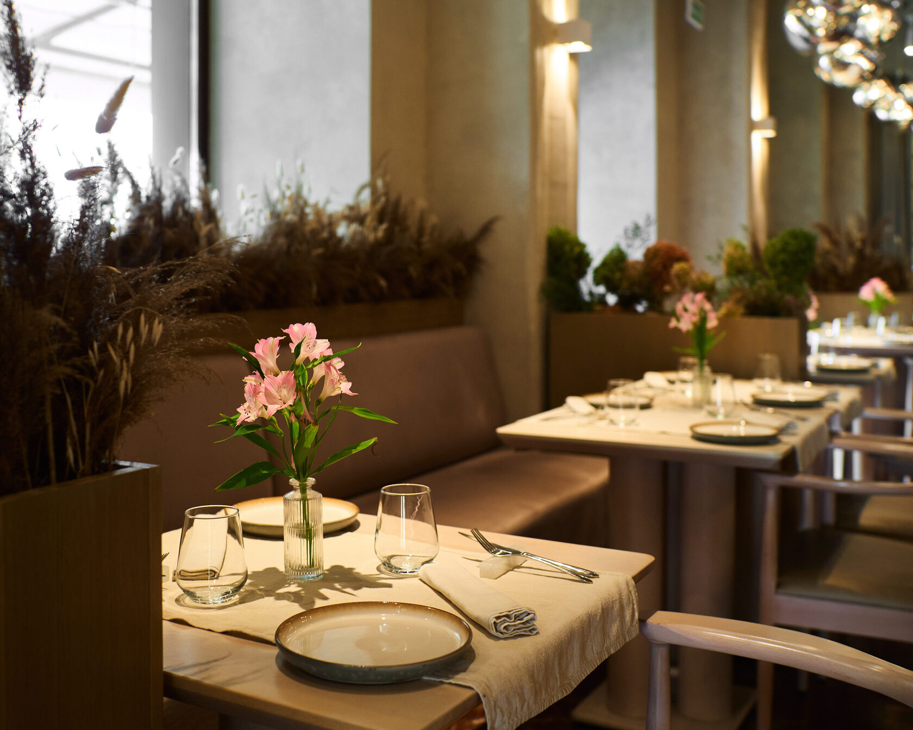

Marbl Restaurant
май 2020 – авг. 2023Премиальный ресторан с нуля: концепция и дизайн. Разработал программы обучения и стандарты обслуживания, вёл контроль бюджета через ABC-анализ. Развивал B2B-продажи через корпоративных клиентов и мероприятия, а вместе с шеф-поваром балансировал креативность меню и рентабельность.